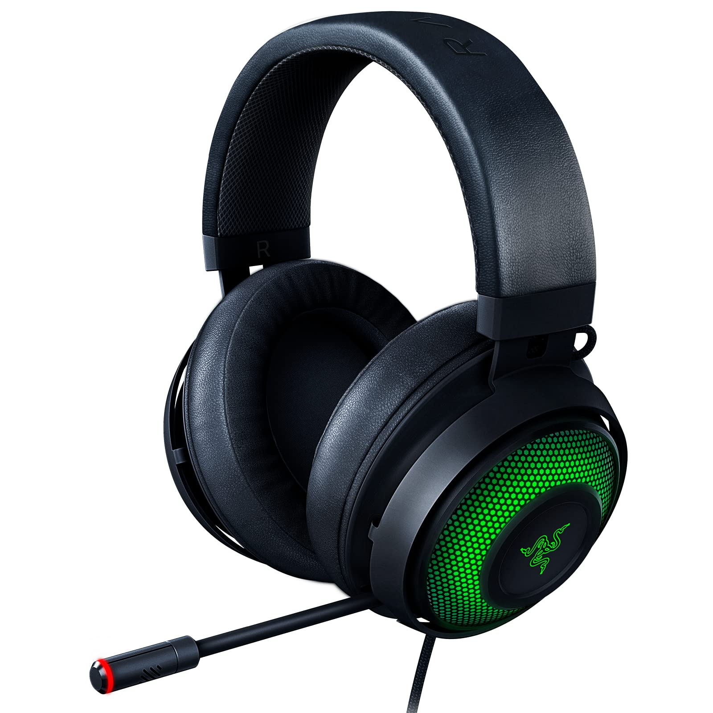

Razer Krazen:
Descrição:

E se dissermos que é possível experimentar uma imersão completa nos jogos sem sentir que você está usando um fone de ouvido? entre no razer kraken x; ultraleve com apenas 250g e imersivo com som surround 7.1. sente-se e jogue por horas - suas maratonas de jogos estão prestes a ser fáceis; equipado com software de som surround 7.1, para que você possa ouvir um áudio posicional preciso durante os jogos - você poderá escolher a direção de onde a ação está vindo, para estar pronto para entrar em um tiroteio; com drivers personalizados de 40 mm, o razer kraken x produz um som claro e equilibrado, desde explosões estrondosas em guerras generalizadas até passos sutis em operações secretas furtivas; o microfone flexível e flexível utiliza um padrão cardióide que grava o som de uma área focada na boca; isso ajuda a capturar sua voz com clareza enquanto suprime o ruído de fundo na parte traseira e nas laterais.